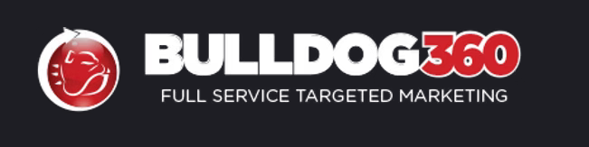
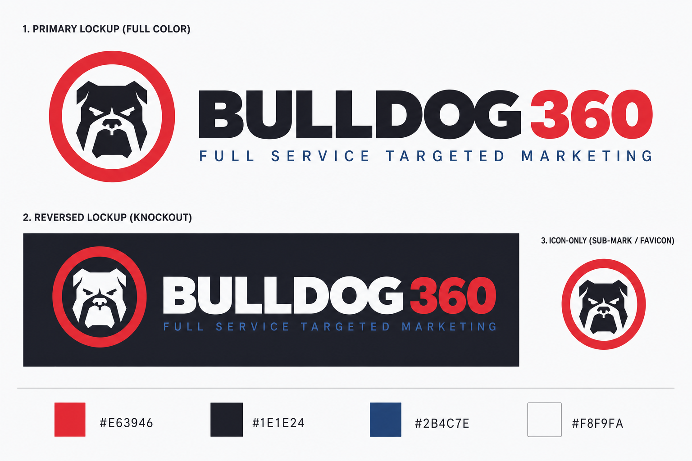
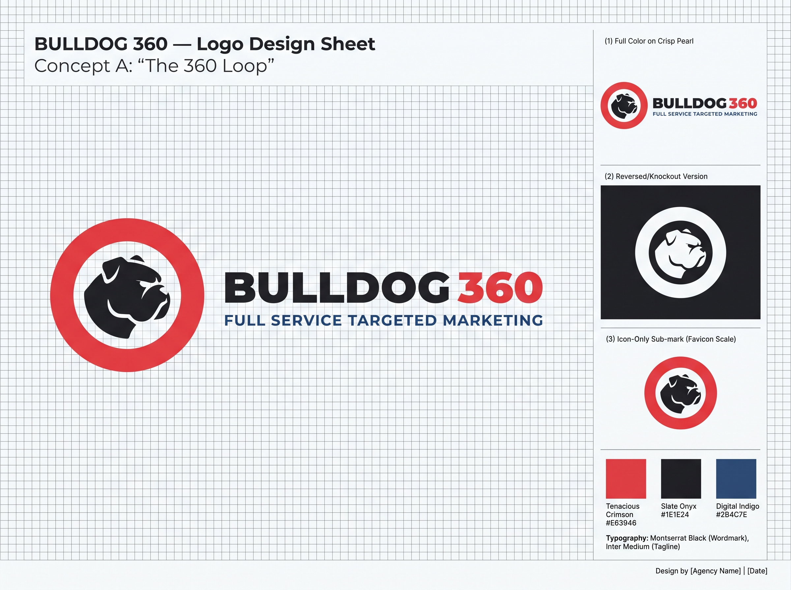
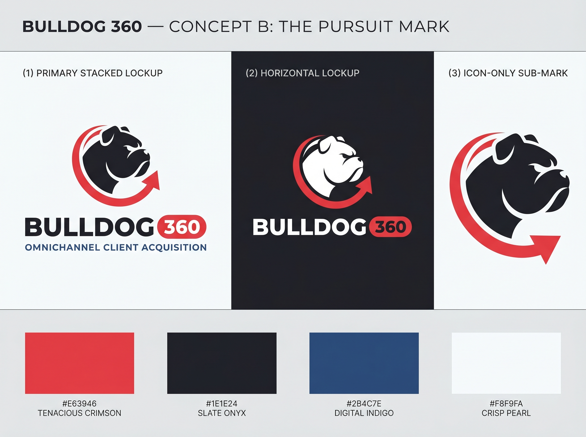
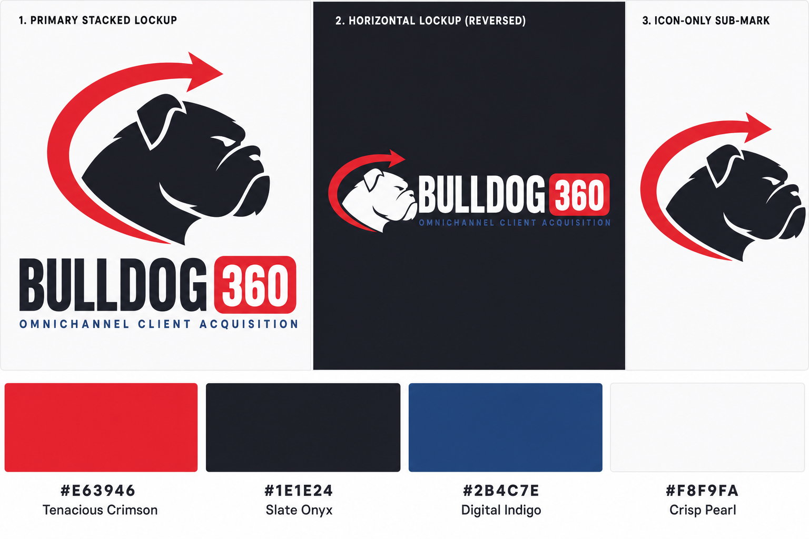
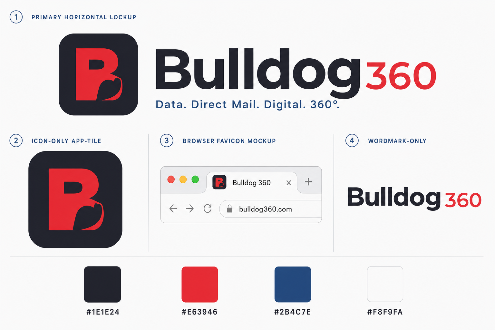
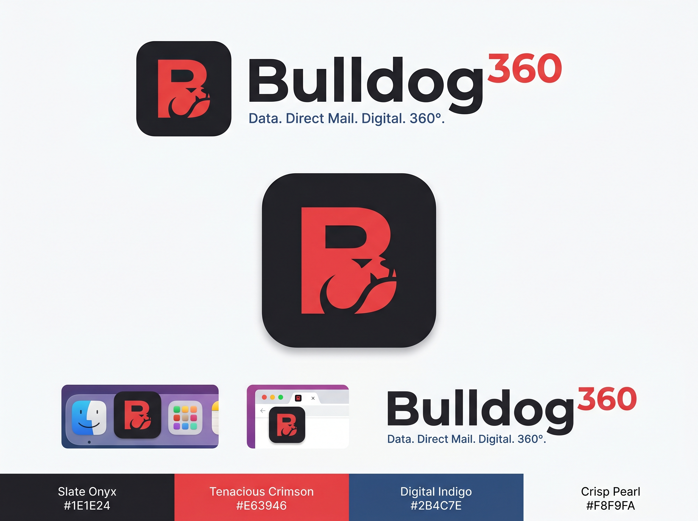
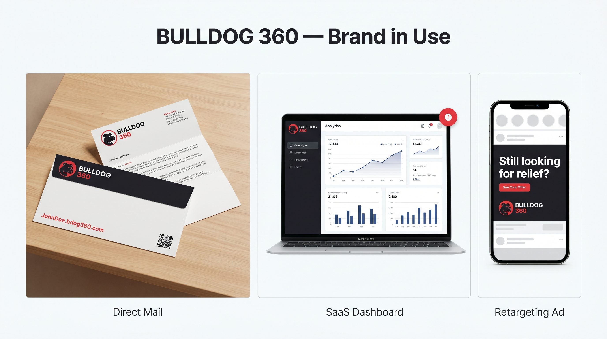
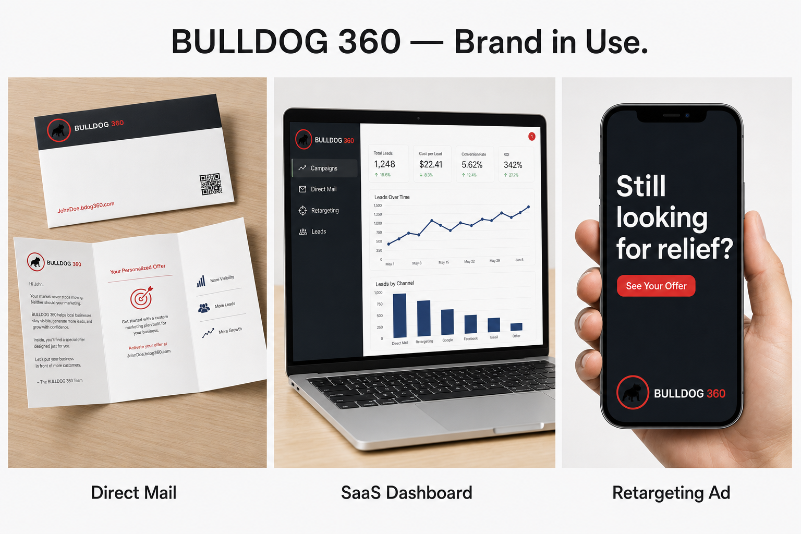

Tenacious Crimson
Primary Accent
Calls to action, urgent headers, print response triggers. Use sparingly so it never reads as decoration.
- HEX
- #E63946
- RGB
- 230, 57, 70
- CMYK
- 2, 92, 71, 0
Enter the access password to view this document.
Wrong password — try again.
bdog360.com
Connecting Offline Precision with Digital Scalability.
Bulldog 360 fuses traditional direct mail with advanced digital retargeting, email, and lead acquisition. This document is the working baseline of the brand — what currently exists, where the gaps are, and what a refresh must address.
External tagline · on the mark
Full Service Targeted Marketing
Internal directive · north star
Connecting Offline Precision with Digital Scalability
About this baseline
This is v1.0 Baseline. It captures the brand as it stands today — the logo currently in market, the palette and type system specified in the prior style document, and the voice rules that have governed direct mail and digital placements to date.
A refresh — including a likely logo update, palette reconciliation, and an explicit decision on the SaaS / white-label positioning — is planned next. Sections of this guide that describe future-state ambitions are clearly marked North Star; sections where the current logo or system has drifted from the documented standard are marked Drift Note.
Use this document to brief vendors, onboard new contributors, and align on what does and does not exist today.
01 · Brand Strategy
The Bulldog represents unyielding commitment to results, protective client loyalty, and data tenacity. The 360 represents an unbroken lifecycle of a lead — originating from hyper-targeted proprietary data, reaching them offline via direct mail, and instantly tracking, capturing, and retargeting them online.
To bridge the gap between physical direct response and digital omnipresence — arming agencies and enterprise clients with the high-intent data and execution they need to maximize ROI.
To become the standard-setting engine for omnichannel client acquisition, making data-driven marketing completely seamless.
01
Results-driven
We don't guess; we execute until campaigns convert. We are relentless in optimizing performance.
02
Data-first
Everything begins with deep, proprietary data insights. Intuition takes a backseat to analytics.
03
Omnichannel integration
Print is not dead, and digital is not standalone. True impact lies in the 360° intersection of both.
04
SaaS & scale
White-label software that lets other agencies effortlessly scale their own solutions.
North Star · Future State
The Empowerment pillar describes a white-label SaaS product Bulldog 360 intends to build — it is not in market today. Until a shipping product exists, treat this pillar as aspirational positioning. External marketing should not promise SaaS deliverables; internal strategy can continue to plan toward it.
02 · Visual Identity · Logo
Bulldog 360's current logo pairs a red circular badge containing a stylized bulldog illustration with a heavy extruded sans-serif wordmark — "BULLDOG" in white, "360" in red — and the descriptor line Full Service Targeted Marketing.
Always maintain a safety margin around the logo equal to the height of the letter "B" in the wordmark. No element — text, image, page edge — may enter this zone.
Dashed line indicates minimum exclusion zone (≈ x-height of "B").
Do
Place the full lockup on solid Crisp Pearl, Slate Onyx, or a solid-color backing card over busy imagery.
Do
Preserve the relative scale of the badge to the wordmark — the bulldog should never be detached from the "BULLDOG 360" type.
Don't
Stretch, warp, skew, or apply gradients, drop shadows, or outlines to any part of the mark.
Don't
Place the primary logo on highly busy photographic backgrounds without a solid backing layer.
Drift Note · Sub-Mark
The prior style document specified a Sub-Mark — "a clean geometric 360 Loop encompassing a minimal bulldog silhouette" for favicons, software avatars, and social profiles. No such sub-mark currently exists. Favicons and social avatars are presently using a crop of the primary badge, which is dense at small sizes. Building this sub-mark is a refresh deliverable.
03 · Visual Identity · Color
High-energy direct response (Crimson) paired with data integrity (Slate Onyx) and technological reliability (Digital Indigo), grounded by a clean print- and screen-ready Pearl. Click any value to copy it.
Primary Accent
Calls to action, urgent headers, print response triggers. Use sparingly so it never reads as decoration.
Base Tone
Authority text, primary backgrounds, structural layout. The brand's deep, grounding neutral.
Secondary Accent
Software UI highlights, dashboards, hyperlinks. Carries the technological half of the brand.
Neutral Light
Direct mail canvas, clean page backgrounds, high-readability areas.
Drift Note · Logo vs Palette
The canonical Crimson above is #E63946, but the red actually used on the current logo is noticeably deeper:
#CA1E28 — rgb(202, 30, 40)#D22229 — rgb(210, 34, 41)This is a documented mismatch, not a permission to drift further. The refresh must resolve it one of two ways: (a) shift the canonical palette down to match the mark, or (b) repaint the mark up to #E63946. Until that decision is made, all new work should use the canonical #E63946 and treat the logo's reds as a known legacy variance.
04 · Visual Identity · Typography
A tight geometric sans-serif stack preserves clarity from billboard-scale headlines down to 11-point dashboard labels. No display, script, or decorative faces.
Don't guess. Execute.
ABCDEFGHIJKLMNOPQRSTUVWXYZ · 0123456789
Real-time conversion rate · 8.4% · last 30 days
ABCDEFGHIJKLMNOPQRSTUVWXYZ · 0123456789
Bulldog 360 drives client acquisition by bridging high-intent direct mail with multi-device digital tracking. Every prospect that touches a mailer can be retargeted within hours, across platforms, with creative that perfectly emulates the physical piece they received.
ABCDEFGHIJKLMNOPQRSTUVWXYZ · 0123456789
05 · Voice, Tone & Messaging
Bulldog 360 speaks as the seasoned operator in the room — the one who understands both old-school direct-response psychology and new-school IP retargeting infrastructure. Confident, grounded, and built on metrics rather than adjectives.
A
Backed by proprietary databases. No hyperbole; use metrics.
B
Time is money. Skip the marketing fluff. Lead with the value.
C
Instill momentum without manufactured panic. We're in lead conversion, not anxiety production.
| Instead of | Say | Reasoning |
|---|---|---|
| "We do cool marketing stuff online and offline." | "We drive client acquisition by bridging high-intent direct mail with multi-device digital tracking." | Clear, professional, and highlights the 360 loop mechanism. |
| "Our software is cheap and easy to use." | "Our white-label SaaS infrastructure gives agencies a turn-key, scalable client fulfillment engine." | Positions software as a growth asset rather than a low-cost utility. (See North Star — SaaS not yet shipping.) |
| "Get a ton of cheap leads fast." | "Unlock targeted, compliant databases to capture qualified prospects in real time." | Focuses on quality, security, and intent rather than spammy framing. |
06 · Omnichannel Application
The brand earns trust by being recognizable at every touch — the same red, the same wordmark, the same authority — whether it arrives in a #10 envelope or a 300×250 banner.
Print is the cornerstone.
JohnDoe.bdog360.com) or high-contrast QR code.Match the mailer.
North Star: when the dashboard ships.
North Star · SaaS UX
Section 6.3 above describes the look-and-feel of the planned Bulldog 360 SaaS dashboard. The product is not yet in market. These rules are reserved for that build and should not appear in client-facing claims about current capabilities.
07 · Refresh · Logo Concepts
Before locking the v2 logo, the refresh team ran a structured study: a critique of the in-market mark, three distinct strategic directions that each answer a different question about who Bulldog 360 is, and the same brand system rendered in real-world use. This section is the working artifact of that study.

In-market mark, rendered on Slate Onyx so the white wordmark is legible.Direction for the next pass: flatten the bulldog, build the missing sub-mark, tighten the wordmark, and deliver light and dark variants in the same system. The three concepts below each take that brief in a different strategic direction.
Concept A
A literal interpretation of the brand's namesake: a perfect crimson ring — the 360 — that physically encloses a flat, stencil-style bulldog. The icon and the name are no longer two separate ideas; they're the same idea drawn once.


Concept B
A bulldog locked onto a target, with a crimson arc orbiting around it that resolves in an arrowhead — momentum, not a closed badge. This direction leans into the "tenacity" pillar and treats the 360 as motion, not geometry.


Concept C
A software-first identity for a software-first future. A rounded-square app tile holds a stylized capital "B" whose right counter is shaped — in negative space — into the abstract jowl of a bulldog. The "360" rides the wordmark, not the icon.


The refreshed identity has to hold across the same three touchpoints the brand already lives in: a printed mail piece, an analytics dashboard, and a retargeting ad on a phone. The composites below show the system applied end-to-end — same crimson, same wordmark, same authority, three very different surfaces.


Recommendation · pair, don't pick
The three concepts are not mutually exclusive. The cleanest path forward is to combine Concept A and Concept C: adopt The 360 Loop as the primary lockup that ships on direct mail, ads, and the website hero, and adopt The B360 Monogram as the SaaS-side sub-mark — favicon, app icon, dashboard sidebar, OAuth screens. They share the same color system and type stack, so the brand reads as one identity wearing two appropriate uniforms.
Concept B (The Pursuit Mark) is best preserved as a motion / campaign device — the orbiting arc is a strong motif for hero animations, video bumpers, and direct-mail callout stickers — rather than a standalone primary mark.
Status · exploratory
The concepts shown here are exploratory studies, not the final v2 mark. Selection, refinement, vector cleanup, and trademark clearance are next-step deliverables. Do not deploy any of the artwork in this section to production surfaces.
08 · Refresh Targets
This baseline is honest about its gaps. The following items are open decisions for the upcoming brand refresh — none of them are blocked, and most are quick once the strategic calls are made.
#CA1E28/#D22229 to match the mark, or repaint the mark up to #E63946.